2243.2 Génie Logiciel - 2026-2027
Vue d'ensemble
1. Classes et objets
2. Relations
3. Notes, stéréotypes et contraintes
4. Démarche de conception
5. Diagramme d'objets
Cycle de vie d'un logiciel ou système :
Cas d'utilisation
Diagrammes de classes
Il s'agit de transformer le besoin métier exprimé en une architecture (orientée objet)
La notion d'
| Identité : permet de le distinguer des autres objets | ⟶ |
|
|
| Attributs : données caractérisant l'objet | ⟶ |
|
|
| Méthodes : actions que l'objet peut réaliser | ⟶ |
|
Notion de
| Voiture |
| Numéro de série : Int Poids : double Immatriculation : String Kilométrage : double |
| Démarrer() Arrêter() Rouler() |
| FIAT-UNO-17 |
| 233434 : Numéro de série 1500 kg : Poids 8864 YF 17 : Immatriculation 33 000 : Kilométrage |
| Renault-Clio-17 |
| 5323454 : Numéro de série 1500 kg : Poids 64 YFT 17 : Immatriculation 23 000 : Kilométrage |
| Peugeot-206-75 |
| 3434 : Numéro de série 1700 kg : Poids 8634 YGG 75 : Immatriculation 15 000 : Kilométrage |
| Compte |
Nom
class Compte
{
};
| Compte |
| numero : string solde : double |
Attributs
class Compte
{
string numero;
double solde;
};
| Compte |
| numero : string solde : double |
| debiter(double) : void crediter(double) : void getSolde() : double calculerNouveauNumero() : string |
Méthodes
class Compte
{
string numero;
double solde;
void debiter(double) {}
void crediter(double) {}
double getSolde() {}
static string calculerNouveauNumero() {}
};
Souligné : membre de classe (static)
| Compte |
| - numero : string - solde : double |
| + debiter(double) : void + crediter(double) : void + getSolde() : double # calculerNouveauNumero() : string |
+ : public
- : private
# : protected
class Compte
{
private:
string numero;
double solde;
public:
void debiter(double) {}
void crediter(double) {}
double getSolde() {}
protected:
static string calculerNouveauNumero() {}
};
| Client |
| Produit |
class Person
{
public:
string FirstName;
string LastName;
std::vector<Car*> cars;
};
class Car
{
public:
string CarID;
Person* pOwner;
void Start();
};
class Police
{
std::vector<Car*> Fines;
};
Nombre min. et max. d'instances dans la relation
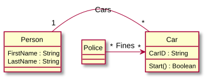
Couplage plus fort
Relation d'appartenance
L'un peut exister sans l'autre
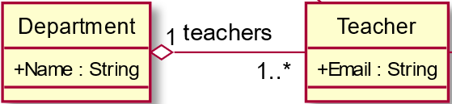
Couplage encore plus fort
Relation d'appartenance
Mais l'un
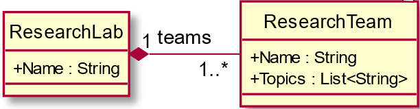
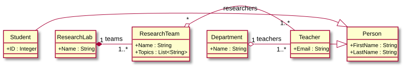
Une flèche qui restreint le sens de navigation
Les instances d'une classe ne « connaissent » pas les instances de l'autre.
Par ex. la voiture ne connaît pas les détails du policier
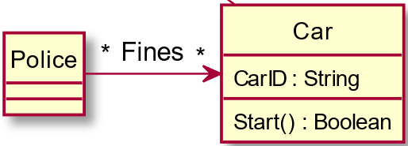
Association porteuse d'attributs et/ou d'opérations, représentée comme
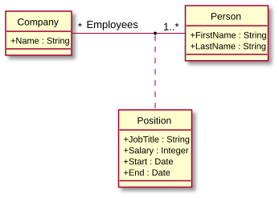
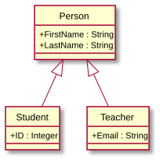
Chaque personne de l'université est identifiée par son nom, prénom ; de plus, les étudiants ont un noEtudiant ; de plus, les enseignants ont un email
Une classe abstraite est une classe
Elle représente une pure abstraction afin de factoriser des propriétés
En UML, elle se note en italique ou avec
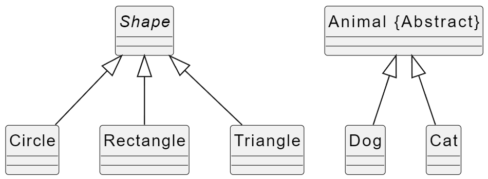
Ajout de contraintes, de commentaires, etc.
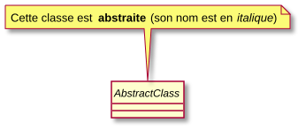
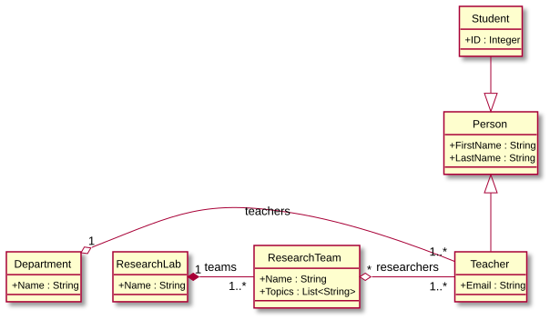
Mécanisme d'extensibilité du méta-modèle d'UML.
⇒
| Rectangle | ||
| p1 : Point p2 : Point | ||
| « constructors »Rectangle(p1 : Point, p2 : Point) Rectangle(p1 : Point, s : entier) | ||
| stéréotypage du compartiment des méthodes d'une classe (notation valide mais non recommandée) | ⟶ | « query »surface() : réel largeur() : réel … |
| élision (…) : stéréotype standard qui indique la présence d'un filtre visuel (l'existence d'une suite dans une liste) | ⟶ | « update »redimensionne(f : entier) … |
Les contraintes sont des expressions qui précisent le rôle ou la portée d'un élément de modélisation (elles permettent d'étendre ou préciser sa sémantique)
Sur une association, elles peuvent par exemple restreindre le nombre d'instances visées (ce sont alors des « expressions de navigation »)
Les contraintes peuvent s'exprimer en langage naturel.
Identifier et analyser les « noms » dans les phrases
⇒
Identifier et analyser les « verbes » dans les phrases
⇒
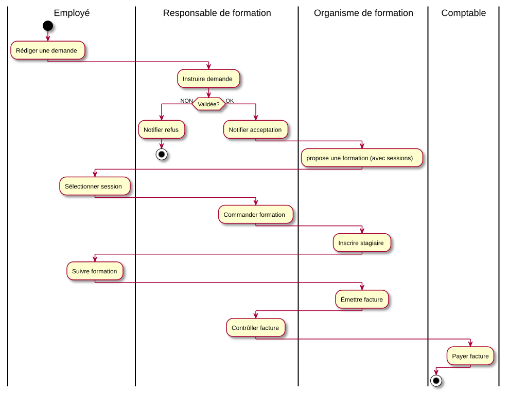
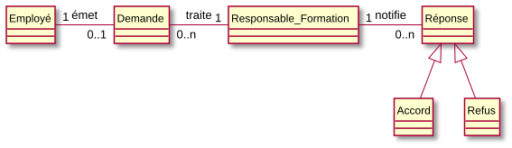
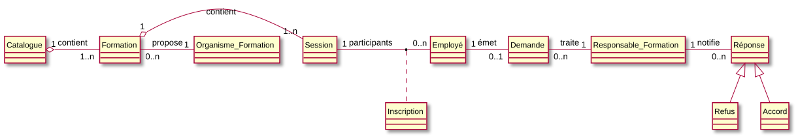
Montre les relations entre
Instantané, photo d'un sous-ensemble des classes (plus simple)
Permet de vérifier un diagramme de classes selon différents cas
Voir site du cours